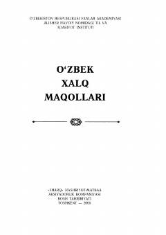

0XO'zbek xalqining ko'p asrlik donishmandligini aks ettiruvchi maqollar to'plami.
Bu to'plam O'zbekiston Respublikasi Fanlar Akademiyasi Alisher Navoiy nomidagi Til va Adabiyot instituti tomonidan tayyorlangan bo'lib, o'zbek xalq maqollarini keng qamrovli tarzda jamlaydi. To'plam ko'p asrlik hayotiy tajribalar, xalq donishmandligi va badiiy tafakkurning ifodasi bo'lgan minglab maqollarni o'z ichiga oladi. 2005-yilda «Sharq» nashriyotida nashr etilgan ushbu kitob keng kitobxonlar ommasiga mo'ljallangan.